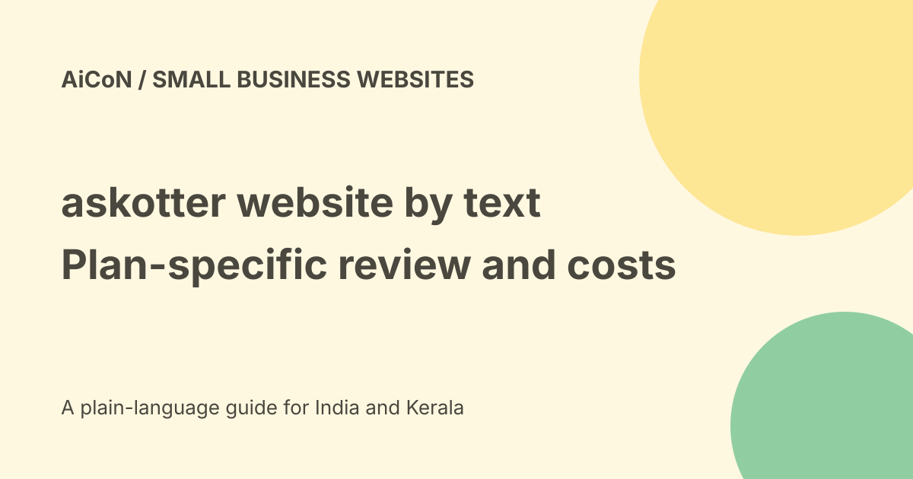

askotter: website changes by text, review and real costs
askotter describes website changes requested through a normal text thread, previewed before publication and approved by the owner. The important plan difference is who checks and publishes them: vendor human review is included on managed plans, not the self-managed base plan. Pricing and ownership also need more care than the original short post suggested.

The text-to-preview flow
The product page describes sending a request, receiving a preview, checking the result and replying yes before the change goes live. It says rollback and a timestamped change log remain available.
Those are product descriptions, not a tested change on this reader's site. Check the whole preview, including price, hours, links and structured data, before approving.
Human review is plan-specific
The current comparison page says self-managed users review and publish their own changes. On managed plans, someone from askotter reviews and publishes after the owner approves.
Do not describe every plan as having a vendor employee check every draft. The plan table is more specific than a broad marketing headline.
Self-managed costs
The pricing page lists ninety-nine dollars monthly as the base, with compute-based charges above it. More analysis or watched ad channels can increase the bill.
At the checked Wise rate of ₹96.35 per dollar, the base is roughly ₹9,539 monthly before taxes and conversion fees. This is a conversion estimate, not an India checkout quote or a maximum bill.
Managed and ads plans
Managed SEO is listed at six hundred dollars monthly, approximately ₹57,810. Managed plus ads is one thousand dollars monthly, approximately ₹96,350 at the same rate.
Ad spend is billed separately by the advertising platforms. A management fee does not buy an unlimited advertising budget. Read the actual service scope and limits.
Free trial is not a free ongoing service
The text-management page advertises fourteen days free without a card. That trial wording does not replace the paid plan terms or establish unlimited ongoing usage.
No trial, audit request or subscription was started. Inspect current account terms before relying on a trial allowance.
Who owns the website?
The pricing FAQ says the business owns its domain from day one. On a managed plan, it says the website becomes yours after six months; cancellation before that leaves it with askotter.
Domain ownership and website ownership are different. Ask about export, files, redirects, hosting exit and access before migrating a valuable business site.
Month-to-month does not erase every consequence
The page says there is no setup fee or minimum term and that plans can be cancelled month-to-month. That should be read alongside the managed-site ownership rule.
A short billing commitment can still create migration work or loss of site control. Confirm what continues after cancellation and what must be moved.
What is not supported
The comparison page says the plans do not support an online store with cart and checkout. It says they do not replace a CRM, booking system or sales process.
The text-management page also says simultaneous editors needing separate page permissions are better suited to a conventional CMS. Do not assume every existing site can be moved without tradeoffs.
Illustrative demos versus results
The product tour says its clinic, garage, domain and figures are invented examples. They demonstrate the interface, not verified customer revenue or your likely outcome.
The pricing page presents other client figures with their stated source and period. Neither set establishes guaranteed leads, search rank or return on your ad spend.
A careful service evaluation
- Confirm the exact plan and who reviews changes.
- Get compute and advertising billing rules.
- Review domain and site ownership terms.
- Identify integrations the plan does not replace.
- Test a non-sensitive draft and inspect the preview.
- Check approval, rollback and change logs.
- Confirm export and cancellation steps.
- Review final scope and cost before subscribing.
No website, advertisement, domain or account was changed here.
India and privacy
No Indian phone support, tax-inclusive INR tariff, regional hosting or local payment flow was tested. Verify the text route and data contract for your business.
Do not put patient records, passwords or payment details in a change request. Website marketing work is not permission to expose customer data.
What changed since the original post?
We correct universal human-review wording, add compute above the self-managed base, separate ad spend and explain the six-month managed-site ownership condition.
Frequently asked questions
Does self-managed include vendor human review?
The current table says no.
Is the base fee the maximum bill?
No. Compute and other costs can apply.
Does domain ownership mean immediate site ownership?
No. The managed terms distinguish them.
Sources: Official text-change workflow · Current pricing and ownership · Plan-specific review comparison · Approximate USD conversion. Checked 7 October 2026.